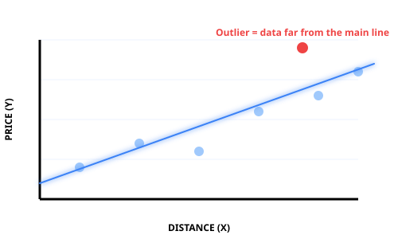

Introduction of Machine Learning in 15 minutes.
✅ No Code required
✅ No Math Degree needed
✅ Real Answers for non-technical curious minds
Click the arrow on the right to start the journey →
Simplifying the world of AI into human terms.
At its simplest level, Machine Learning is the art of teaching a computer to predict the future by studying the past.
In traditional computing, humans write Rules (If this happens, do that).
In Machine Learning, we give the computer Examples and let it find the patterns itself.
Think of it as a three-step journey:
We feed the machine thousands of past examples (Data). Like showing a child 100 pictures of an apple.
The machine clarifies the "Common Threads" or patterns. It learns that apples are usually round and red.
When shown a new fruit it has never seen, it uses those patterns to "guess" if it's an apple.
The Bottom Line: Machine Learning turns a "Rule-Follower" into a "Pattern-Seeker." It allows computers to handle messy, real-world situations where the rules are too complicated for a human to write down.
In the 1950s, computers were massive calculators that only did what they were told. Arthur Samuel, an IBM researcher, changed everything.
Samuel wanted to play Checkers, but he didn't want to program millions of "If/Then" rules for every possible board state. It was impossible for a human to write that much code.
The Breakthrough: He wrote a program that recorded every game played. By analyzing which moves led to a "Win" (History) and which led to a "Loss," the machine began to recognize Relationships between positions and victory. By 1962, the computer beat a Checkers master—it had officially "learned" better than its creator.
A common question is: Are Machine Learning and Linear Regression the same thing? Not exactly. They work together like a Strategy and a Tactical Tool.
Think of Machine Learning as the "School of Science." Linear Regression is just the first "Equation" students learn to solve problems. It is the foundation upon which almost all modern AI is built.
It is the science of the "Straight Line." It assumes the world follows a consistent, proportional logic.
When you hear "Linear Regression," just think of a straight trend line that tells you: "If you increase X, Y will reliably follow."
Linear Regression is a continuous (no ends) value prediction.

Machine Learning isn't just for scientists; modern companies use "Straight Line" logic to manage our daily lives more efficiently (*)
They analyze the History of millions of trips to fix a Relationship between distance and cost. This allows them to Predict your fare instantly, ensuring drivers are paid fairly and riders aren't surprised.
By studying the Relationship between "Time of Day" and "Customer Traffic," they Predict exactly how many Baristas are needed. This prevents long queues for you and wasted labor costs for them.
Providers know that for every 1-degree rise in temperature, power demand spikes by a fixed %. They use this Relationship to Predict load and prevent blackouts during heatwaves.
By looking at the History of nearby sales, machines find the Relationship between "Land Size" and "Market Value." This turns a "Guess" into a data-backed Price Prediction.
Can you think of other examples?
* Note: Real-world models often use many more "ruler" variables simultaneously.
Linear Regression is our foundation, but the world isn't always a straight line. To handle more "human" problems similar to Linear Regression, there are a few more real-world variances but these are 2 simple cousins:
The "Curved Ruler." Used when things speed up or slow down—like the path of a rocket or how a virus spreads. It bends to fit the reality of the data.
The "Decision Maker." Instead of predicting a price, it predicts a Category. Is this email Spam? (Yes/No). Is this transaction Fraud? (Yes/No).
The Big Picture: We start with a straight line to understand the basics. Once we master that, we can bend the line or use it to make "Yes/No" decisions for the entire world.
We don't use Machine Learning just because it's "cool"—we use it to solve the Human Scale Problem.
1. Why do we need Machine Learning?
In the 1950s, we had "Small Data" that humans could manage. Today, we have "Big Data." A human brain can't analyze 10 million Uber rides or 50 years of climate patterns in a second. Machine Learning is the Digital Filter that processes the noise so we can make better decisions.
2. Why is Linear Regression still the King?
You might think a "Straight Line" is too simple for 2026, but it remains the Foundation of Trust. Unlike complex "Black Box" AI that even scientists don't fully understand, Linear Regression is Explainable. It tells us exactly Why and How a price changed.
We use the past to clarify the present and predict the future.